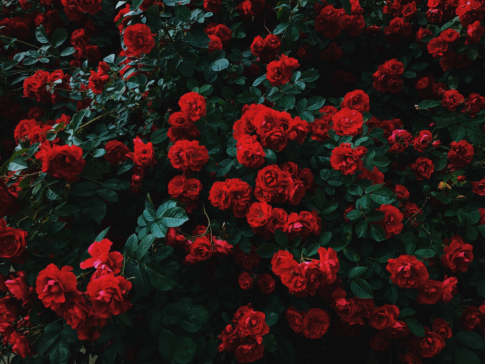
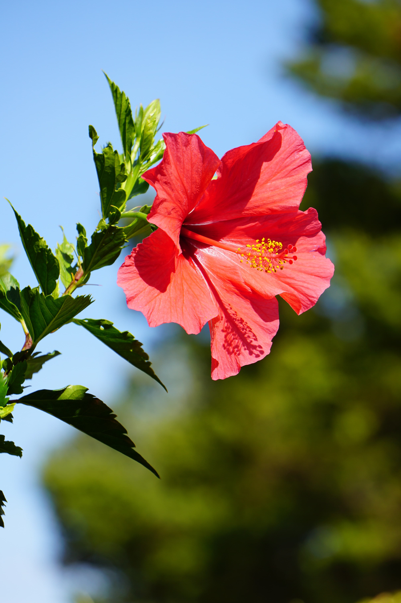
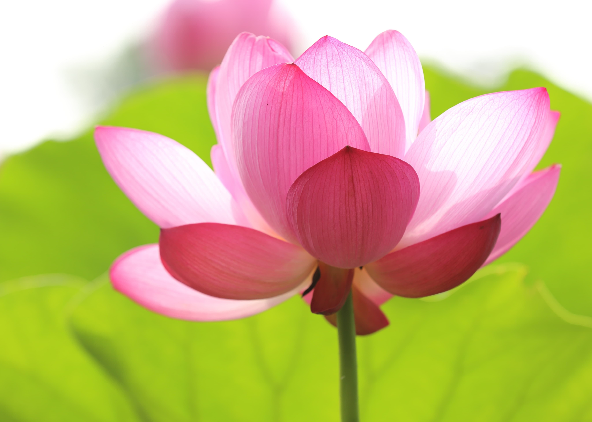

Animals
In our zoo garden there are lots of Endangered animals.
Asian Elephant
There are two types of elephants in world.Asian and african elephants. You can get a experiance of 6 asian elaphants and one african Elephant
Macaw Parrot
In the bird world one of the most colourful birds kind. There are more than 18 spices of this kind. There are long-tailed warm coloured birds.
Giant Panda
Panda is one of the endangered animals in the world. A combination of black and white fur and a round-shaped body gets lots of attraction from people.
Peacock
Another beautiful bird. The male species is called peacock and the female species is called the peafowl.
Giraffe
Is one of the biggest mammals in the animal kingdom. The giraffe has long-necked and long legs with a fur pattern of dark brown patches on a light brown background.

African Lion
Most powerful predator in the animal kingdom. Honour as king of the animal world. with the strong strength of its body, it can easily take down its prey.
Plants
| Name of the plants | Details of the plants | Picture of the plants |
|---|---|---|
| 1.Roses |
Beautiful flower. There are more than 120 species with various colours. It takes a major role in decorating functions and special moments in human life. People used to grow in many countries as a business. It has so many pettles with thorns in the stem. |
 |
| 2.Hebiscus |
Common flower. Can be seen all over the country and is available in different colours. Hibiscus tea is known as a good medicine to reduce the risk of heart diseases and lower high blood pressure. |
 |
| 3.Lotus |
Lotus flowers can identify in three beautiful colours-pink, white and blue. Lotus flowers have a special place related to Buddhism. The way it blooms out of the mud gives meaning full thoughts to human life. Drinking tea from the lotus flowers and leaves may lower your cholesterol and diabetes level. |
 |